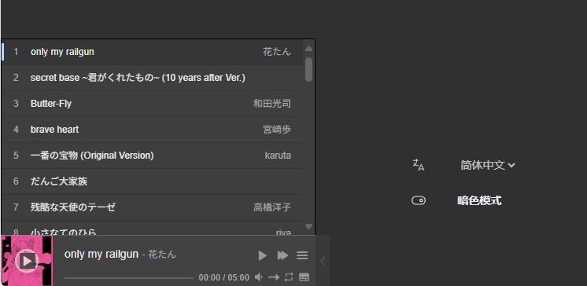

1 引入音乐播放器
- 【Aplayer官方文档】
- （1）在博客主目录中创建文件
layouts\partials\footer\custom.html，此文件为Stack主题作者留给我们加入自定义组件用的文件(可以查看主题源码同路径文件找到)
- （2）查看官方文档，引入对应的脚本，css到
custom.html中，页面最下面就会出现音乐播放器
|
|
- （3）Aplayer原生用法：
|
|
更多用法请考：APlayer官方文档
- （4）APlayer 原生用法设置参数十分繁琐，而且只能调用音频文件直链，增加服务器开销。而使用 MetingJS 就很好地解决了这个问题。一个MetingJS播放器至少需要三个参数：
|
|
在只设置了这三个参数的情况下，列表默认展开，且播放器显示占用地方较大，可以再设置以下两个参数：
|
|

|
|
更多请参考：MetingJS官方文档
2 音乐播放器样式切换
通过上述方式引入的音乐播放器会出现在主题切换亮/暗色模式时，音乐播放器没有切换的问题
- （1）通过阅读Stack主题的源码可以看到，主题样式的切换是通过
[data-scheme="light/darck"] {...} - （2）所有我们可以准备两种Aplayer的css，用
[data-scheme="light"]{ 亮的css样式 }包裹亮的，用[data-scheme="dark"]{ 暗的css样式 }包裹暗的，这里直接给各位准备好了- aplayer-dark.scss（Ctrl+S保存）
- aplayer-light.scss（Ctrl+S保存）
- （3）然后在博客主目录中创建文件
assets\scss\custom.scss，此文件为Stack主题作者留给我们加入自定义样式用的文件(可以查看主题源码同路径文件找到) - （4）将上述两个scss文件放到跟 custom.scss同目录下，并通过
@import来进行引入文件
|
|
- （5）既然音乐播放器的css已经被我们改为从本地文件引入，那么custom.html中的link标签就可以注释或者删掉了

至此样式随主题切换就已经完成了